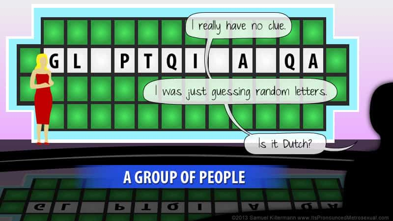

"You know, walk the earth, meet people... get into adventures."


As we begin to enter a post-politically correct apocalypse of social justice fascism, we can see that freedom of speech is dead. Ostensibly, you can still say whatever you want, but, in any area of your life that isn’t anti-fragile, you can suffer retaliation from those who wish to punish you for saying things with which they do not agree. In today’s article, I will describe how the culture of the American workplace oppresses the majority of its workers by following the hyper-politically correct agenda of the homosexuals movement.
June is “Pride Month,” and it is recognized by my employer by putting up all sorts of banners and flags and signs depicting the joys of homosexuality. It gets worse every year as it trends with society’s illness of recognizing every mental aberration and plea for trendiness as a legitimate “lifestyle choice.”
The anti-harassment training rolled out last year had been upgraded to reflect “identity” and the latest crazes, although the trannies in the bathrooms epidemic had not yet occurred. This Pride Month, however, featured a rollout on the new gay abbreviation.

I’m not kidding, either; they took the somewhat long standing acronym for gay, kinda gay, and “had my dick inverted” and added a whole bunch of the latest hotness on it. Here’s the list and some Red Pill style definitions.
Lesbian: Gay female
Gay: Gay male
Bisexual: Half gay
Transgender: Gay, but on the other team
Two Spirited: Both gay and not gay
Queer: Hipster gay
Questioning: Trendy liberal who is possibly gay
Intersex: Gay by virtue of hardware deformity
Asexual: Going gay out of desperation from lack of success with opposite sex
Ally: Trendy liberal who is not gay
You’ll notice it’s all some form of being gay, and some of them are redundant with others, or have very little difference between them. All of these were considered mental illnesses at one time, and I suppose some of them are still technically that way.
I don’t know of anyone with whom I work or interact that actually cares about the sexual habits of someone they know, and, being purposefully located in the conservative Midwest, I know very few flamboyantly gay people at all. Yet all you see in the media, and all you get out of the more “progressive” parts of the country is a push to constantly create new sexual preferences, expressions, and identities.
I don’t know why what genitals people prefer to have and to encounter is such an important thing, but you are more “relevant” if you have the latest preference, and thus, more protected by virtue-signalling. Perhaps it’s a method of defining a sense of self for people that have none, or a plea for acceptance and group membership, but I think it has very little to do with what people actually prefer sexually and, instead, is merely a form of social expression, like dressing in black all the time.
Regardless of why people are doing this, the problem is that the corporate world (what matters in a capitalist society like any western nation) is taking them seriously.
When I was a child, I spoke as a child, I understood as a child, I thought as a child, but when I became a man, I put away childish things. —1 Corinthians 13
Like most problems, advice can be found in the Bible for this one. It’s a plea for attention, it doesn’t matter in a work environment, and the corporate answer should be “Good for you, we don’t care, go back to your desk, please.”
The problem with the tolerance of stupidity is that that stupidity eventually becomes widely accepted as the truth, and those who are not stupid are forced to accept it or face persecution for their non-belief. As the Overton Window inevitably shifts more and more left, behavior that was widely considered an execution worthy taboo in the past is now encouraged and desired today.
What if you march to a different, or additional drum than what society wants? What if your religion has something to say about the matter? If you’re Islamic, you’re good to go, as no SJW would dare question the word of Allah. I guess the true test of the strength of your SJW-ism is, if you’re gay and a Muslim tosses you off a building for your heresy, do you scream on the way down, or just quietly accept your fate? After the Orlando shooting, LGBT gun purchases are really increasing, so it looks like they are rightfully choosing survival and the right to live over being politically correct. Good for them.
But, if you’re a Christian, you’re in for a world of grief. Unless you follow every single thing in both the New AND Old Testaments (proving that SJWs don’t really understand what Christianity actually IS), expect to be called a hypocrite and have your views discounted. If you had sex before marriage or ever had divorce, you’re not really a Christian, so you don’t get a say on being gay or anything else, so goes their dismissal of you.
There’s an inherent logical flaw in claiming that a core part of your movement’s ideals is the acceptance of all opinions and views, then dismissing views and opinions that disagree with yours. A true believer of a legitimate philosophy should not be afraid to debate and defend his stance.
I leave it to my colleague, Br. Moner, for speaking of certainty, but I will apply an engineer’s logic to the failings of HR policy here. There are two problems with proclaiming policy on such a nebulous and irrelevant thing as sexual identity, preference, and practice in the workplace, and either one of them should have been enough to persuade anyone with sense to never make such a thing in the first place.
Homosexuals and other people comprise way under 10% of the population, usually 3-5%, depending on your source. Christians are around 62% of the population. Despite varying beliefs and statements on homosexuality in Christianity, even if we took it as a 50/50 split, that’s still 20% more of the population that thinks it’s wrong than thinks it’s right. This is not an argument for “Gay Is Not OK” signs at work, this is an argument not to get involved at all.
Second reason not to get involved is that times change, and what is legal or trendy today may have been taboo yesterday. Progressives like to think that everything new they think of is an improvement, possibly only because they thought of it, but a large percentage of people do not agree with the multi-gendered, multi-racial, out-of-wedlock, multi-partner sexfest fueled by abortion and the pill that romance in our day in age has become. There is no reason to endorse current societal thinking on such things as it WILL change and NOT necessarily for the better.
This may be the new “thing” soon. On a side note, do NOT look for images by googling “horse love.”
Dictating policy, even in the guise of acceptance and promotion of individuality, is contrary to the ideals of free speech and the freedom of expression. The only ideals that forcing the SJW agenda down peoples’ throats endorse are those of the SJWs. That’s not freedom, that’s fascism, and, even if it is cloaked in the righteous guise of equal rights, it’s only equality for those that they care about, which are women and minorities of racial, sexual, or religious nature.
When you buck the narrative, you interfere with their vision of how the new reality should be, and, rather than debate with you, they seek to eliminate you professionally, socially, and perhaps, one day, personally. If someone does not welcome your ideas and speech because they think it’s dangerous, it is their speech that is dangerous, not yours. Roosh’s new book is on such a subject, and I am currently reading it and enjoying it greatly.
 If you like this article and are concerned about the future of the Western world, check out Roosh's book Free Speech Isn't Free. It gives an inside look to how the globalist establishment is attempting to marginalize masculine men with a leftist agenda that promotes censorship, feminism, and sterility. It also shares key knowledge and tools that you can use to defend yourself against social justice attacks. Click here to learn more about the book. Your support will help maintain our operation.
If you like this article and are concerned about the future of the Western world, check out Roosh's book Free Speech Isn't Free. It gives an inside look to how the globalist establishment is attempting to marginalize masculine men with a leftist agenda that promotes censorship, feminism, and sterility. It also shares key knowledge and tools that you can use to defend yourself against social justice attacks. Click here to learn more about the book. Your support will help maintain our operation.
Read More: How Human Resources Departments Are Ruining STEM Jobs For Men